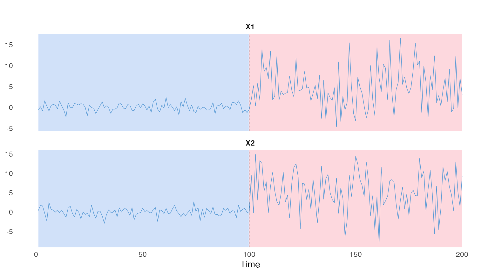

Offline change-point detection for multivariate time series in R.
rupturesRcpp finds the times at which the behaviour of a series changes: its mean, its variance, its autocorrelation, or its relationship with covariates. It brings the cost functions and search methods of the Python library ruptures to R, with a C++ core and an R6 interface.
Every detection combines a cost function, a segmentation method and a penalty. The code below finds the change in mean and variance in two simulated series.
library(rupturesRcpp)
set.seed(1)
tsMat = cbind(c(rnorm(100, 0), rnorm(100, 5, 5)),
c(rnorm(100, 0), rnorm(100, 5, 5)))
binSegObj = binSeg$new(costFunc = costFunc$new("SIGMA"))
binSegObj$fit(tsMat)
binSegObj$predict(pen = 100)
#> [1] 100 200
binSegObj$plot(d = 1:2)
Google Summer of Code 2025
rupturesRcpp was created as part of the Google Summer of Code 2025 program (see edelweiss611428/rupturesRcpp at gsoc-2025 for the project archive).
- Project: rupturesRcpp
- Contributor: @edelweiss611428
- Mentors: @tdhock and @deepcharles
- Organisation: The R Project for Statistical Computing
Future development
- Improve the
"L1"cost module, potentially allowing queries inO(log(n))time using data structures such as a persistent segment tree withO(nlog(n))precomputation. - Clean and enhance the existing object-oriented interface for improved efficiency, robustness, and accessibility (see https://github.com/edelweiss611428/R6BinSeg/tree/main for an idea).
- Implement
$get_params()for segmentation modules. - Implement methods for model selection/diagnostics.
- Implement additional cost functions (e.g.,
"Poisson"). - Implement other offline change-point detection classes (e.g.,
BottomUp). - Improve
$plot()method for models involving both dependent and independent variables.
Contributing
We welcome all contributions, whether big or small. If you encounter a bug or have a feature request, please open an issue to let us know.
Feel free to fork the repository and make your changes. For significant updates, it’s best to discuss them with us first. When your changes are ready, submit a pull request.
Thanks for helping us improve this project!
License
This project is licensed under the Creative Commons Attribution 4.0 International (CC BY 4.0) License.
References
- Hocking, T. D. (2024). Finite Sample Complexity Analysis of Binary Segmentation. arXiv preprint arXiv:2410.08654.
- Truong, C., Oudre, L., & Vayatis, N. (2020). Selective review of offline change point detection methods. Signal Processing, 167, 107299.
- Killick, R., Fearnhead, P., & Eckley, I. A. (2012). Optimal detection of change points with a linear computational cost. Journal of the American Statistical Association, 107(500), 1590–1598.